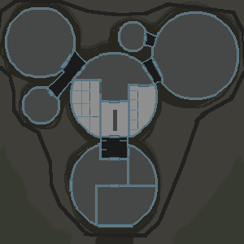

Valhalla Space Group (shortened to VSG) was founded in 122PCE as a space exploration outfitter, specializing in the research and design of human habitats and vehicles. We designed the first renditions of Yggdrasil habitat, Slepnir ATV and Lamellar Suit amongst many others within those first years. We were contracted to many other exploration companies but never intended doing explorations ourselves. That was until our newest head JoAnne Ripley came to the company and turned it onto its head. While our heart is still in the production of interplanetary exploration research and development, we have started using our knowledge of production to make our own alien discoveries.
Since the beginning Valhalla has prided itself with its minimally invasive designs with maximal comfort and safety for any crew. Valhalla Group was also on the pioneering side of the Footprint Act with our explorations never lasting more than twenty years, with no more then a single human habitat on any given world. In addition to our designs being either packable or biodegradable on applicable planets.
Frigg Research & Exploration Experts
Frigg Research & Exploration Experts (shortened to FREE) while not our first interplanetary mission it will be Valhalla Space Group’s longest, and most intense mission. FREE set out in 145 PCE and will be on the ground until 165 PCE. On Nótt the expedition is being led by DR. Wyetta Jemison, and the Homeside director and coordinator is Dr. Jamie Hamilton.
FREE is a minimally invasive expedition of the planet of Nótt. The goals of this expedition is to discover, define and seek out the fauna and flora of the area around the base of operations. While we do not know exactly what we will find we are sending pharmaceutical and ecological experts to see if any discoveries on Nott will help us here at Home. Much like many other space exploration companies FREE is dedicated to furthering mankind and helping heal Home through our discoveries.
About Nótt
Nótt is located in the Árvakr solar system in the M31 galaxy. Nótt is a tidally-locked planet orbiting Árvakr, a Red dwarf, while testing shows that Nótt is an old planet it appears that the life on it is relatively young. Previously it was believed that tidally-locked planets could not sustain life but with the discovery of Nótt many interplanetary exploration groups are looking into other “inhabitable” planets.
With Nótt the majority of the planet is Inhabitable, either cracked desert on the light side or permafrost frozen tundra on the dark side, but when looking closer there is a about 780-meter-wide stretch of land from poll to poll that encapsulates a habitable area. This area is similar to dusk or dawn at all times so it has gained the name of the Dawn zone and this is where life flourishes. This small strip of land wrapping from poll to poll gets just enough light to sustain life and keep water liquid without drying out the land to a crisp.
Because of this unique planet setup, the animals found on Nott are completely unique to what evolved on Home. While these creatures have similar body layouts and aesthetic similarities to animals found on Home their internal makeup behavior and evolution is completely separate from our own. To learn more about the animals and environment of Nótt look at the Our Discoveries page
Technology
As stated before VSG is a technology and R&D compony first and foremost so almost all of the technology held within and around the FREE expedition is provided by Valhalla Space Group. From our smallest radio to the largest Yggdrasil compound VSG is found in all parts of the FREE expedition. Our cutting-edge tech and engineering are leagues above our competitors. Valhalla also has commercial subsidiaries so if you know where to look there may be a little bit of our tech in your home. Valhalla is proud of their designs and engineering and prides itself on the high quality of our products, and we are happy to show you these designs being used on the FREE mission.
Yggdrasil
A: Lab
B: main life-support
wet rooms
C: showers
D: stageing area
E: lavitory
living area
K: recreation room
L: dormitories
J:seckondary life-support
Depressurized areas
F:airlock and decontamination
G:secondary stageing area
H:quarantine
I: garage
Yggdrasil is our modular human habitat system. These buildings are flexible and based off of a geodesic design that can be made and dismantled in an hour. Yggdrasill’s support network is made out of an aluminum-like compound, the body made out of a Kevlar-nanotube and reflective flexible steel mesh creating an airtight pressurized environment. Depending on the use of the module, and how long it will be in use, they will either be completely dismantlable and able to be brought back into orbit or they can be charged with local microscopic decomposers to biodegrade after their use.
The Yggdrasil kept on Nott is our best model yet. The safety of Nótt only comes second to the safety of our crew. While Nótt has an atmosphere much like our own the Yggdrasil there is kept under a slight negative pressure as to ensure that any human contaminates are to stay within the dome if any puncture or rip were to happen. No crew member may leave the pressurized area without wearing a Lamellar Suit and if any catastrophic failure happens an antibiotic charge would be release within the affected area in seconds of any breach.
The lab: a state-of-the-art lab filled with the best of the best equipment. This lab specializes in biology but can be outfitted to help any of the spiciest who call Nótt home.
Life support: life support systems has been Valhalla’s specialty from the start. The Yggdrasil found on Nótt is powered by the geothermal energy prevalent in the dawn zone, with backup fusion generators on standby if anything were to happen.
Showers: hot and cold water at a touch.
Prep room/staging area: if one wants go go out of the pressureized areas of the Yiggraisl unit they must equip their Lamellar Suit. This is where those suits are put on and equipment is selected. .
Lavatory.
Airlock and decontamination: to leave or enter the pressurized zones of Yggdrasil one must pass through the airlock and decontamination. To make sure no human germs are introduced to Nótt and no contaminates from the surface make our crew members sick.
Secondary staging area: this is where all of the large equipment and specimens are kept. Any experiments done on live cells takes place here along with storage the large 3d printer and other large equipment.
Quarantine: in the case of exposure to contamination, this area can be used as a medical unit. It is isolated from both the main Yigrasil unit and the outside. A minimum 48 hour quarantine is mandated with any amount of exposure to the planet’s atmosphere.
The garage: where the Slepnir is kept if it is not in use, along with extra parts, and all the equipment needed for repairing the ATV.
Backup life support.
Recreation area: this is where the crew lives. They have access to a full kitchen, entertainment center, computers, and communal areas. They also have access to an extanet uplink and a digital library for non-working hours.
Dorms/ bedrooms: every member of the crew has their own dorm. These dorms have a bed, desk, Extranet uplink, chair, sink and storage.
Fence: the entire Yggdrasil compound is surrounded by a 15ft electrified fence to keep any animals that might damage or get hurt by the Yggdrasil’s rigging away. The fence is also equipped with ultrasonic noise makers to detour any flying animals and keep any animals from touching the fence in the first place.

slepnir
Slepnir is our ATV designed to be fast, safe and efficient, battery-powered and highly adaptable; Slepnirs are one of our most proud achievements as they have everything a human needs in almost every way it is a traveling Yggdrasil unit with decontamination, energy generation, sleeping quarters, lab equipment and access to uplink with Home and bases around the solar system. They are designed to be lived in, in case of long expeditions or emergencies. The interior is highly modifiable as new needs pop up, it can comfortably hold and camp three people and sustain up to six in case of a major emergency.
Slepnir is made out of the same base materials as the Yggdrasil systems. They are one of the first things to land on any given planet and one of the last to be deconstructed and brought back into orbit Slepnir need to be tough and fixable if anything were to go wrong. And here at Valhalla Group we made sure that is possible almost all of the parts of a Slepnir unit can be removed and replaced easily usually within an hour with trained technicians. While Slepnir is our newest design and the newest Slepnir is being used on Nótt we have full confidence in its ability to get the job done.
Lamellar Suit
Lamellar Suits are one of Valhalla group’s oldest designs. A multipurpose pressurized walking suit, that is specialized for planets with atmospheres but can be used in small amounts in a vacuum and under water up to 10m deep. Lamellar Suits are made out of a lightweight rubberized carbon nanotube fabric with external pads, heating and cooling system and waterproofing. Internally it has a layer of cotton and moisture wicking interlacing. Additional light systems, tool belts and safety gear can be attached and removed as needed. Though with this flexibility of use the main perpous of the Lamellar Suit is to protect its wearier from the outside and the outside from the wearer. It is equally a HAZMAT suit as much as it is a space suit or exploration equipment.
While the entreaty of the Lamellar Suit is state of the art here at Vallhalla we are most proud of the air system. while the suit is can be equipped with tanks and/or a rebreathing system the Lamellar Suits that are being used on Nótt and a few other planets with biospheres, can supplement or completely use the air around the suit; filtering any air coming in from contamination or noxious gasses. Then on the out breath It also filters the air to match the area and remove any human pathogens. For as hostile any planet may be any germ to get out of human containment could spell disaster for the planet’s ecology.